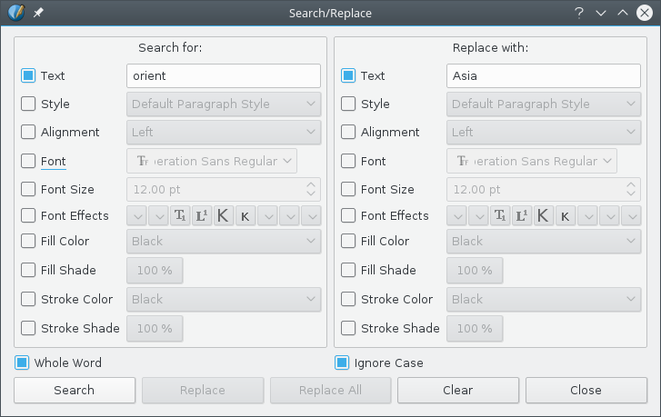

In most text editors, we expect to have a function that finds and then gives the option of replace some text. In Scribus, not only can you do that, but much more.
There are two conditions in which Search/Replace becomes available, one is when you are in Edit Contents mode in a text frame, and the other is in Story Editor. In the former situation, select from the menu Edit > Search/Replace (Ctrl+F is the shortcut). In Story Editor it will be in its menu, and the keyboard shortcut works there as well. |
|  |
The dialog which you see here may look rather imposing, but it's actually quite straightforward once you check out its features. In this very simple example above, we have decided only to look for the text “orient”, with the option to replace with “Asia”. Furthermore, the boxes checked at the bottom say that we only want to find “orient” as a complete word (“oriental” would not match), and we will ignore case (“Orient” will also match). Your search can be even more interesting when you begin to add other parameters. Not only can you search for these particular letters in sequence, you might restrict your search to only that word in a particular typeface or font size or color, and so on down all of these choices – they all can be chosen. This is quite powerful, since what you may be interested in doing is not changing the text at all, but just changing its character style or color. Beyond that, searching for any particular text is optional, since you might just search for all the text in small caps or in some color or style. After there is some match you can then decide to Replace or just Replace All, or skip to the next match by clicking Search. If there are no further matches, a pop-up dialog appears saying, Search finished. Given the size of this dialog, one tricky aspect is repositioning so that you can see the match highlighted. |
There is a limitation in this process, and that is in text entry. You can only directly enter characters from the keyboard, which might include spaces, but not a non-printing character like a carriage return. Since the keyboard shortcut for entering Unicode characters does not work here, this is not possible, nor other special glyphs. If you have some system settings for entering special characters from the keyboard, this should work as expected.
For example, it may be helpful to use a Compose key for this purpose. Once you set this up on your system, many characters not represented on your keyboard may be entered. For example, let's assume you have set up the left Win key as your Compose key. To enter é from the keyboard, type Left-Win, then ', then e. Most accented characters are intuitive, but there are online resources to help with more unusual characters.
Another workaround for these situations is that before you open this dialog, you copy the sequence of special characters you need, for example highlighting them and then pressing Ctrl+C. Now open the dialog and paste, Ctrl+V. You won't see a carriage return in the text field, but it will be there and look like a space. Printing characters should however show up. If you want different special glyphs in Search and Replace, you should be able to figure out some method to accomplish this, but remember that Search/Replace saves your last entries even if they weren't used. Also worth mentioning is that as long as you haven't closed Scribus, the settings carry over from one document to the next.